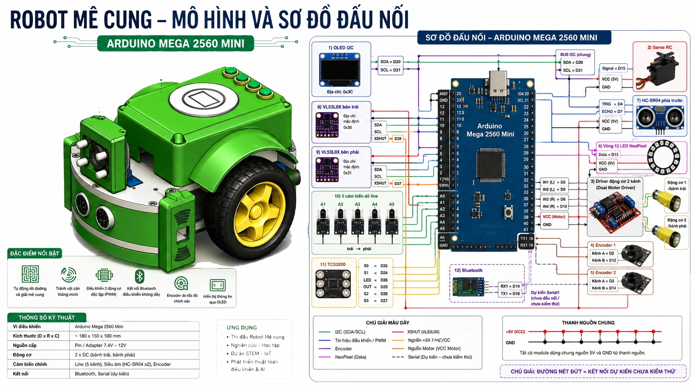
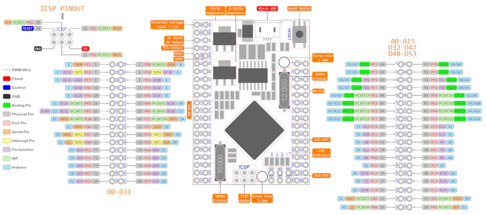
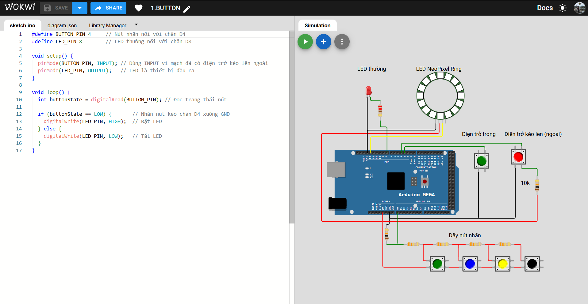
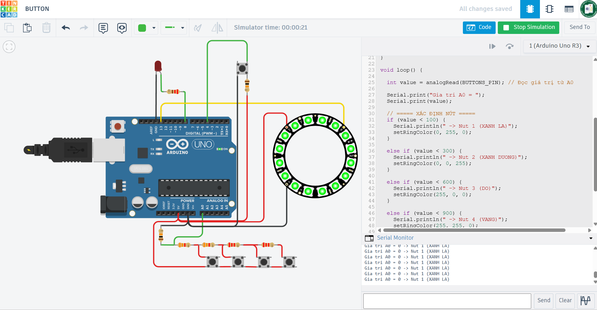

Bài 1. Giới thiệu phần cứng Robot
Bài học giúp học viên nắm được cấu trúc tổng thể của robot, chức năng của từng mô-đun phần cứng, bộ điều khiển trung tâm Arduino Mega 2560 Pro và sơ đồ kết nối chân sử dụng trong robot thi đấu.
1. Cấu trúc phần cứng Robot thi đấu
Robot thi đấu là một hệ thống robot tự hành được thiết kế để thực hiện các nhiệm vụ như di chuyển trong mê cung, bám line, tránh vật cản, nhận dạng màu sắc và xử lý nhiệm vụ trên sân thi đấu.

Các mô-đun chính trên robot
- Mạch điều khiển trung tâm: Arduino Mega 2560 Pro.
- Cảm biến dò line 5 kênh: phát hiện vạch dẫn đường.
- Cảm biến siêu âm: đo khoảng cách trái, trước, phải.
- Cảm biến màu sắc: nhận biết màu vật thể.
- IMU: hỗ trợ xác định góc quay và trạng thái chuyển động.
- Động cơ trái/phải: tạo chuyển động vi sai hai bánh.
- Servo: thực hiện thao tác gạt hoặc đẩy vật.
- OLED, Bluetooth, LED: hiển thị, giao tiếp, báo trạng thái.
2. MCU Arduino Mega 2560 Pro
Arduino Mega 2560 Pro là bộ điều khiển trung tâm của robot. Mạch sử dụng vi điều khiển ATmega2560, có số lượng chân vào/ra lớn, phù hợp với hệ robot cần kết nối nhiều cảm biến, động cơ và mô-đun giao tiếp cùng lúc.

Đặc điểm chính
- Nhiều chân digital để điều khiển động cơ, servo, LED và cảm biến số.
- Nhiều chân analog để đọc cảm biến line và cảm biến tiệm cận.
- Có chân ngắt ngoài, thuận lợi khi đọc encoder tốc độ cao.
- Hỗ trợ I2C cho OLED và IMU.
- Hỗ trợ Serial1 để kết nối Bluetooth HC-06.
3. Cấu hình chân mới nhất của Robot
Bảng dưới đây là cấu hình nguồn sự thật đã được dùng trong thư viện RobotMega2560Mini v1.2.0 và các chương trình đã kiểm tra trên robot thật.
| Thiết bị / tín hiệu | Chân Mega 2560 Mini | Chức năng | Ghi chú |
|---|---|---|---|
| Động cơ trái | D5, D9 | Chiều và PWM | Không đảo trong phần mềm |
| Động cơ phải | D6, D10 | Chiều và PWM | Đảo chiều trong phần mềm |
| Encoder trái | D2, D12 | Xung A/B | D2 dùng ngắt ngoài |
| Encoder phải | D3, D14 | Xung A/B | D3 dùng ngắt ngoài |
| HC-SR04 phía trước | TRIG D4, ECHO D7 | Khoảng cách trước | Một cảm biến |
| VL53L0X trái | XSHUT D39 | Nhìn vuông góc sang trái | I2C 0x30 |
| VL53L0X phải | XSHUT D37 | Nhìn vuông góc sang phải | I2C 0x31 |
| Năm cảm biến line | A1–A5 | Từ trái sang phải | Analog |
| TCS3200 | S0 D25, S1 D24, LED D26, OUT D29, S2 D28, S3 D27 | Nhận dạng màu | Đúng theo robot đã thử |
| OLED | SDA D20, SCL D21 | Hiển thị | I2C 0x3C |
| Servo RC | D15 | Cơ cấu đẩy/gạt | Ngắt tín hiệu khi không dùng |
| NeoPixel | D13 | 12 LED trạng thái | GRB, 800 kHz |
| Bluetooth | Serial1 D18/D19 | Dự kiến | Chưa đấu nối |
| Nút nhấn | A0 | Dự kiến | Chưa đấu nối |
| MPU6050 | I2C D20/D21 | Mở rộng | Chưa đấu nối |
4. Khai báo chân thống nhất trong Arduino IDE
Sinh viên dùng đúng các tên và chân dưới đây trong tất cả bài thực hành. Khi phần cứng thay đổi, chỉ sửa tại vùng cấu hình, không thay rải rác trong thuật toán.
// ===== ĐỘNG CƠ VÀ ENCODER =====
const uint8_t MOTOR_TRAI_A = 5;
const uint8_t MOTOR_TRAI_B = 9;
const uint8_t MOTOR_PHAI_A = 6;
const uint8_t MOTOR_PHAI_B = 10;
const bool DAO_DONG_CO_TRAI = false;
const bool DAO_DONG_CO_PHAI = true;
const uint8_t ENCODER_TRAI_A = 2;
const uint8_t ENCODER_TRAI_B = 12;
const uint8_t ENCODER_PHAI_A = 3;
const uint8_t ENCODER_PHAI_B = 14;
// ===== CẢM BIẾN KHOẢNG CÁCH =====
const uint8_t SIEU_AM_TRIG = 4;
const uint8_t SIEU_AM_ECHO = 7;
const uint8_t LASER_TRAI_XSHUT = 39;
const uint8_t LASER_PHAI_XSHUT = 37;
const uint8_t LASER_TRAI_DIA_CHI = 0x30;
const uint8_t LASER_PHAI_DIA_CHI = 0x31;
// ===== CẢM BIẾN LINE =====
const uint8_t LINE_PIN[5] = {A1, A2, A3, A4, A5};
// ===== CẢM BIẾN MÀU TCS3200 =====
const uint8_t MAU_S0 = 25;
const uint8_t MAU_S1 = 24;
const uint8_t MAU_LED = 26;
const uint8_t MAU_OUT = 29;
const uint8_t MAU_S2 = 28;
const uint8_t MAU_S3 = 27;
// ===== CƠ CẤU CHẤP HÀNH VÀ HIỂN THỊ =====
const uint8_t SERVO_PIN = 15;
const uint8_t NEOPIXEL_PIN = 13;
const uint8_t SO_LED_NEOPIXEL = 12;
const uint8_t DIA_CHI_OLED = 0x3C;
// I2C Mega 2560: SDA D20, SCL D21.
// Bluetooth Serial1 và nút A0 hiện CHƯA ĐẤU NỐI.5. Tài liệu tự học lập trình Arduino
Để học tốt các bài tiếp theo, học viên nên tự học các kiến thức cơ bản về Arduino Mega 2560. Tài liệu này cung cấp các nội dung nền tảng như: Điều khiển LED, nút nhấn, cảm biến, hiển thị, động cơ và giao tiếp.
🚀 01. Lập trình Arduino Mega 2560 cơ bản- Tổng quan Arduino Mega 2560
- Hướng dẫn sử dụng Wokwi để lập trình và mô phỏng online
- Bài 1–3: LED và nút nhấn
- Bài 4–5: Cảm biến cơ bản
- Bài 6–11: Lập trình hiển thị cơ bản
- Bài 12-13: Điều khiển động cơ Servo
- Bài 14: Trao đổi dữ liệu qua UART
6. Một số công cụ mô phỏng online
Trong quá trình học và phát triển robot, việc sử dụng các công cụ mô phỏng online giúp học viên dễ dàng thử nghiệm chương trình mà không cần phần cứng thực tế. Hai công cụ phổ biến là Wokwi và Tinkercad.
6.1. Wokwi
Wokwi là nền tảng mô phỏng Arduino online mạnh mẽ, hỗ trợ nhiều loại linh kiện như LED, cảm biến, động cơ, màn hình OLED và đặc biệt là các module hiện đại như NeoPixel, I2C. https://wokwi.com/
- Không cần cài đặt, chạy trực tiếp trên trình duyệt.
- Hỗ trợ tốt các project phức tạp (robot, IoT).
- Có thể chia sẻ project bằng link.
- Phù hợp cho việc học nâng cao và thử nghiệm nhanh.

6.2. Tinkercad
Tinkercad là nền tảng mô phỏng của Autodesk, phù hợp cho người mới bắt đầu học Arduino với giao diện đơn giản và dễ sử dụng. https://www.tinkercad.com/
- Giao diện trực quan, dễ học.
- Phù hợp với các bài cơ bản như LED, nút nhấn, cảm biến đơn giản.
- Tích hợp sẵn môi trường code Arduino.
- Hỗ trợ mô phỏng mạch điện trực quan.

6.3. So sánh nhanh
- Wokwi: mạnh, hỗ trợ nhiều module, phù hợp project robot, tuy nhiên có thể gặp lỗi khi xử lý tín hiệu ADC.
- Tinkercad: dễ dùng, phù hợp học cơ bản.